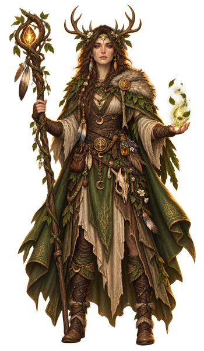

Druid¶
A druid doesn't dominate nature, they petition it—and get answers more often than a king would like. Ask properly, and weather, root, even a wolf's own body can be borrowed a while; the oldest barely bother turning back. Kingdoms trust borders. A druid was loyal to the ground before any line got drawn.

- Hit die
- D8 per Druid level
- Primary ability
- Wisdom
- Saving throws
- Intelligence, Wisdom
- Armor training
- Light armor and Shields
- Weapons
- Simple weapons
- Tools
- Herbalism Kit
- Starting equipment
- Choose A or B: (A) Leather Armor, Shield, Sickle, Druidic Focus (Quarterstaff), Explorer’s Pack, Herbalism Kit, and 9 GP; or (B) 50 GP
| Level | Proficiency Bonus |
Class Features |
Wild Shape |
Cantrips | Prepared Spells |
Spell Slots per Spell Level | Skill Points | ||||||||||
|---|---|---|---|---|---|---|---|---|---|---|---|---|---|---|---|---|---|
| 1 | 2 | 3 | 4 | 5 | 6 | 7 | 8 | 9 | Free Points |
Bound Skills |
Bound Tools |
||||||
| 1 | +2 | Spellcasting, Druidic, Primal Order | — | 2 | 4 | 2 | — | — | — | — | — | — | — | — | 12 | 2 | 1 |
| 2 | +2 | Wild Shape, Wild Companion | 2 | 2 | 5 | 3 | — | — | — | — | — | — | — | — | 12 | 2 | 1 |
| 3 | +2 | Druid Subclass | 2 | 2 | 6 | 4 | 2 | — | — | — | — | — | — | — | 12 | 2 | 1 |
| 4 | +2 | Ability Score Improvement | 2 | 3 | 7 | 4 | 3 | — | — | — | — | — | — | — | 14 | 2 | 1 |
| 5 | +3 | Wild Resurgence | 2 | 3 | 9 | 4 | 3 | 2 | — | — | — | — | — | — | 14 | 2 | 1 |
| 6 | +3 | Subclass feature | 3 | 3 | 10 | 4 | 3 | 3 | — | — | — | — | — | — | 14 | 2 | 1 |
| 7 | +3 | Elemental Fury | 3 | 3 | 11 | 4 | 3 | 3 | 1 | — | — | — | — | — | 14 | 2 | 1 |
| 8 | +3 | Ability Score Improvement | 3 | 3 | 12 | 4 | 3 | 3 | 2 | — | — | — | — | — | 16 | 2 | 1 |
| 9 | +4 | — | 3 | 3 | 14 | 4 | 3 | 3 | 3 | 1 | — | — | — | — | 16 | 2 | 1 |
| 10 | +4 | Subclass feature | 3 | 4 | 15 | 4 | 3 | 3 | 3 | 2 | — | — | — | — | 16 | 2 | 1 |
| 11 | +4 | — | 3 | 4 | 16 | 4 | 3 | 3 | 3 | 2 | 1 | — | — | — | 16 | 2 | 1 |
| 12 | +4 | Ability Score Improvement | 3 | 4 | 16 | 4 | 3 | 3 | 3 | 2 | 1 | — | — | — | 18 | 2 | 1 |
| 13 | +5 | — | 3 | 4 | 17 | 4 | 3 | 3 | 3 | 2 | 1 | 1 | — | — | 18 | 2 | 1 |
| 14 | +5 | Subclass feature | 3 | 4 | 17 | 4 | 3 | 3 | 3 | 2 | 1 | 1 | — | — | 18 | 2 | 1 |
| 15 | +5 | Improved Elemental Fury | 3 | 4 | 18 | 4 | 3 | 3 | 3 | 2 | 1 | 1 | 1 | — | 18 | 2 | 1 |
| 16 | +5 | Ability Score Improvement | 3 | 4 | 18 | 4 | 3 | 3 | 3 | 2 | 1 | 1 | 1 | — | 20 | 2 | 1 |
| 17 | +6 | — | 4 | 4 | 19 | 4 | 3 | 3 | 3 | 2 | 1 | 1 | 1 | 1 | 20 | 2 | 1 |
| 18 | +6 | Beast Spells | 4 | 4 | 20 | 4 | 3 | 3 | 3 | 3 | 1 | 1 | 1 | 1 | 20 | 2 | 1 |
| 19 | +6 | Epic Boon | 4 | 4 | 21 | 4 | 3 | 3 | 3 | 3 | 2 | 1 | 1 | 1 | 20 | 2 | 1 |
| 20 | +6 | Archdruid | 4 | 4 | 22 | 4 | 3 | 3 | 3 | 3 | 2 | 2 | 1 | 1 | 22 | 2 | 1 |
The last three columns are Fate's Hand. They show your running total at that level, not the gain — you keep every step you passed through.
Level 1: Spellcasting
You have learned to cast spells through studying the mystical forces of nature. See “Spells” for the rules on spellcasting. The information below details how you use those rules with Druid spells, which appear on the Druid spell list later in the class’s description.
Cantrips. You know two cantrips of your choice from the Druid spell list. Druidcraft and Produce Flame are recommended.
Whenever you gain a Druid level, you can replace one of your cantrips with another cantrip of your choice from the Druid spell list.
When you reach Druid levels 4 and 10, you learn another cantrip of your choice from the Druid spell list, as shown in the Cantrips column of the Druid Features table.
Spell Slots. The Druid Features table shows how many spell slots you have to cast your level 1+ spells. You regain all expended slots when you finish a Long Rest.
Prepared Spells of Level 1+. You prepare the list of level 1+ spells that are available for you to cast with this feature. To start, choose four level 1 spells from the Druid spell list. Animal Friendship, Cure Wounds, Faerie Fire, and Thunderwave are recommended.
The number of spells on your list increases as you gain Druid levels, as shown in the Prepared Spells column of the Druid Features table. Whenever that number increases, choose additional spells from the Druid spell list until the number of spells on your list matches the number on the table. The chosen spells must be of a level for which you have spell slots. For example, if you’re a level 3 Druid, your list of prepared spells can include six spells of levels 1 and 2 in any combination.
If another Druid feature gives you spells that you always have prepared, those spells don’t count against the number of spells you can prepare with this feature, but those spells otherwise count as Druid spells for you.
Changing Your Prepared Spells. Whenever you finish a Long Rest, you can change your list of prepared spells, replacing any of the spells with other Druid spells for which you have spell slots.
Spellcasting Ability. Wisdom is your spellcasting ability for your Druid spells.
Spellcasting Focus. You can use a Druidic Focus as a Spellcasting Focus for your Druid spells.
Level 1: Druidic
You know Druidic, the secret language of Druids. While learning this ancient tongue, you also unlocked the magic of communicating with animals; you always have the Speak with Animals spell prepared.
You can use Druidic to leave hidden messages. You and others who know Druidic automatically spot such a message. Others spot the message’s presence
with a successful DC 15 Intelligence (Investigation) check but can’t decipher it without magic.
Level 1: Primal Order
You have dedicated yourself to one of the following sacred roles of your choice.
Magician. You know one extra cantrip from the Druid spell list. In addition, your mystical connection to nature gives you a bonus to your Intelligence (Arcana or Nature) checks. The bonus equals your Wisdom modifier (minimum bonus of +1).
Warden. Trained for battle, you gain proficiency with Martial weapons and training with Medium armor.
Level 2: Wild Shape
The power of nature allows you to assume the form of an animal. As a Bonus Action, you shape-shift into a Beast form that you have learned for this feature (see “Known Forms” below). You stay in that form for a number of hours equal to half your Druid level or until you use Wild Shape again, have the Incapacitated condition, or die. You can also leave the form early as a Bonus Action.
Number of Uses. You can use Wild Shape twice. You regain one expended use when you finish a Short Rest, and you regain all expended uses when you finish a Long Rest.
You gain additional uses when you reach certain Druid levels, as shown in the Wild Shape column of the Druid Features table.
Known Forms. You know four Beast forms for this feature, chosen from among Beast stat blocks that have a maximum Challenge Rating of 1/4 and that lack a Fly Speed (see “Animals” in “Monsters” for stat block options). The Rat, Riding Horse, Spider, and Wolf are recommended. Whenever you finish a Long Rest, you can replace one of your known forms with another eligible form.
When you reach certain Druid levels, your number of known forms and the maximum Challenge Rating for those forms increases, as shown in the Beast Shapes table. In addition, starting at level 8, you can adopt a form that has a Fly Speed.
When choosing known forms, you may look in other sources for eligible Beasts if the Game Master permits you to do so.
Beast Shapes
Druid Level Known Forms Max CR Fly Speed
2 4 1/4 No
4 6 1/2 No
8 8 1 Yes Rules While Shape-Shifted. While in a form, you retain your personality, memories, and ability to speak, and the following rules apply:
Temporary Hit Points. When you assume a Wild Shape form, you gain a number of Temporary Hit Points equal to your Druid level. Game Statistics. Your game statistics are replaced by the Beast’s stat block, but you retain your creature type; Hit Points; Hit Point Dice; Intelligence, Wisdom, and Charisma scores; class features; languages; and feats. You also retain your skill and saving throw proficiencies and use your Proficiency Bonus for them, in addition to gaining the proficiencies of the creature. If a skill or saving throw modifier in the Beast’s stat block is higher than yours, use the one in the stat block. No Spellcasting. You can’t cast spells, but shapeshifting doesn’t break your Concentration or otherwise interfere with a spell you’ve already cast. Objects. Your ability to handle objects is determined by the form’s limbs rather than your own. In addition, you choose whether your equipment falls in your space, merges into your new form, or is worn by it. Worn equipment functions as normal, but the GM decides whether it’s practical for the new form to wear a piece of equipment based on the creature’s size and shape. Your equipment doesn’t change size or shape to match the new form, and any equipment that the new form can’t wear must either fall to the ground or merge with the form. Equipment that merges with the form has no effect while you’re in that form.
Level 2: Wild Companion
You can summon a nature spirit that assumes an animal form to aid you. As a Magic action, you can expend a spell slot or a use of Wild Shape to cast the Find Familiar spell without Material components.
When you cast the spell in this way, the familiar is Fey and disappears when you finish a Long Rest.
Level 3: Druid Subclass
You gain a Druid subclass of your choice. The Circle of the Land subclass is detailed after this class’s description. A subclass is a specialization that grants you features at certain Druid levels. For the rest of your career, you gain each of your subclass’s features that are of your Druid level or lower.
Level 4: Ability Score Improvement
You gain the Ability Score Improvement feat (see “Feats”) or another feat of your choice for which you qualify. You gain this feature again at Druid levels 8, 12, and 16.
Level 5: Wild Resurgence
Once on each of your turns, if you have no uses of Wild Shape left, you can give yourself one use by expending a spell slot (no action required).
In addition, you can expend one use of Wild Shape (no action required) to give yourself a level 1 spell slot, but you can’t do so again until you finish a Long Rest.
Level 7: Elemental Fury
The might of the elements flows through you. You gain one of the following options of your choice.
Potent Spellcasting. Add your Wisdom modifier to the damage you deal with any Druid cantrip.
Primal Strike. Once on each of your turns when you hit a creature with an attack roll using a weapon or a Beast form’s attack in Wild Shape, you can cause the target to take an extra 1d8 Cold, Fire, Lightning, or Thunder damage (choose when you hit).
Level 15: Improved Elemental Fury
The option you chose for Elemental Fury grows more powerful, as detailed below.
Potent Spellcasting. When you cast a Druid cantrip with a range of 10 feet or greater, the spell’s range increases by 300 feet.
Primal Strike. The extra damage of your Primal Strike increases to 2d8.
Level 18: Beast Spells
While using Wild Shape, you can cast spells in Beast form, except for any spell that has a Material component with a cost specified or that consumes its Material component.
Level 19: Epic Boon
You gain an Epic Boon feat (see “Feats”) or another feat of your choice for which you qualify. Boon of Dimensional Travel is recommended.
Level 20: Archdruid
The vitality of nature constantly blooms within you, granting you the following benefits.
Evergreen Wild Shape. Whenever you roll Initiative and have no uses of Wild Shape left, you regain one expended use of it.
Nature Magician. You can convert uses of Wild Shape into a spell slot (no action required). Choose a number of your unexpended uses of Wild Shape and convert them into a single spell slot, with each use contributing 2 spell levels. For example, if you convert two uses of Wild Shape, you produce a level 4 spell slot. Once you use this benefit, you can’t do so again until you finish a Long Rest.
Longevity. The primal magic that you wield causes you to age more slowly. For every ten years that pass, your body ages only one year.
Druid subclass: Circle of the Land
Celebrate Connection to the Natural World
The Circle of the Land comprises mystics and sages who safeguard ancient knowledge and rites. These Druids meet within sacred circles of trees or standing stones to whisper primal secrets in Druidic. The circle’s wisest members preside as the chief priests of their communities.
Level 3: Circle of the Land Spells
Whenever you finish a Long Rest, choose one type of land: arid, polar, temperate, or tropical. Consult the table below that corresponds to the chosen type; you have the spells listed for your Druid level and lower prepared.
Arid Land
Druid Level Circle Spells
3 Blur, Burning Hands, Fire Bolt
5 Fireball
7 Blight
9 Wall of Stone
Polar Land
Druid Level Circle Spells
3 Fog Cloud, Hold Person, Ray of Frost
5 Sleet Storm
7 Ice Storm
9 Cone of Cold
Temperate Land
Druid Level Circle Spells
3 Misty Step, Shocking Grasp, Sleep
5 Lightning Bolt
7 Freedom of Movement
9 Tree Stride
Tropical Land
Druid Level Circle Spells
3 Acid Splash, Ray of Sickness, Web
5 Stinking Cloud
7 Polymorph
9 Insect Plague
Level 3: Land’s Aid
As a Magic action, you can expend a use of your Wild Shape and choose a point within 60 feet of yourself. Vitality-giving flowers and life-draining thorns appear for a moment in a 10-foot-radius Sphere centered on that point. Each creature of your choice in the Sphere must make a Constitution saving throw against your spell save DC, taking 2d6 Necrotic damage on a failed save or half as much damage on a successful one. One creature of your choice in that area regains 2d6 Hit Points.
The damage and healing increase by 1d6 when you reach Druid levels 10 (3d6) and 14 (4d6).
Level 6: Natural Recovery
You can cast one of the level 1+ spells that you have prepared from your Circle Spells feature without expending a spell slot, and you must finish a Long Rest before you do so again.
In addition, when you finish a Short Rest, you can choose expended spell slots to recover. The spell slots can have a combined level that is equal to or less than half your Druid level (round up), and none of them can be level 6+. For example, if you’re a level 6 Druid, you can recover up to three levels’ worth of spell slots. You can recover a level 3 spell slot, a level 2 and a level 1 spell slot, or three level 1 spell slots. Once you recover spell slots with this feature, you can’t do so again until you finish a Long Rest.
Level 10: Nature’s Ward
You are immune to the Poisoned condition, and you have Resistance to a damage type associated with your current land choice in the Circle Spells feature, as shown in the Nature’s Ward table.
Nature’s Ward
Land Type Resistance
Land Type Resistance
Arid Fire
Temperate Lightning
Polar Cold
Tropical Poison
Level 14: Nature’s Sanctuary
As a Magic action, you can expend a use of your Wild Shape and cause spectral trees and vines to appear in a 15-foot Cube on the ground within 120 feet of yourself. They last there for 1 minute or until you have the Incapacitated condition or die. You and your allies have Half Cover while in that area, and your allies gain the current Resistance of your Nature’s Ward while there.
As a Bonus Action, you can move the Cube up to 60 feet to ground within 120 feet of yourself. Fighter
What Fate's Hand changes
| Bound skill | Bound tool | Free point pool | Expertise access |
|---|---|---|---|
| 2 | 1 | 12 | lvl 4 |
Your class list FH — Animal Handling · Arcana · Insight · Medicine · Nature · Delve · Vigilance · Religion · Survival.
The Druid is one of three classes to carry a bound tool point at all.
This work includes material from the System Reference Document 5.2.1 (“SRD 5.2.1”) by Wizards of the Coast LLC, available at https://www.dndbeyond.com/srd. The SRD 5.2.1 is licensed under the Creative Commons Attribution 4.0 International License, available at https://creativecommons.org/licenses/by/4.0/legalcode.